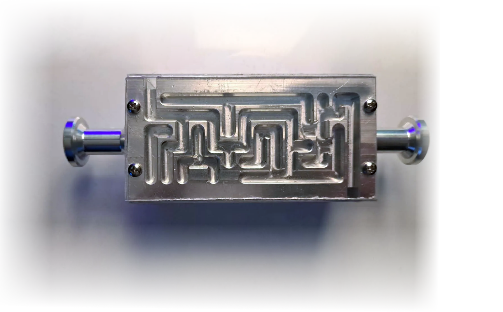
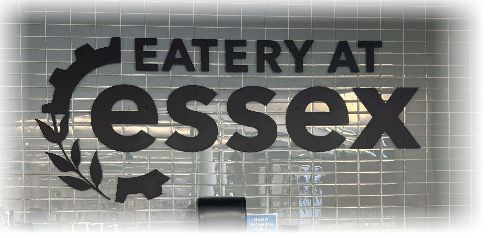

Additional Projects
Freshman Exploratory Maze Project
I got assigned a task for the seniors with the intent of creating a new project for the freshman to work on during exploratory.
I was tasked with creating a 4-sided 3D “maze” with specific parameters and constraints.At first, the requirements seemed manageable, but as additional details, limitations, and design considerations were introduced, the scope of the work expanded significantly. However, instead of viewing these difficulties as setbacks, I chose to approach them with a positive mindset and treat them as valuable learning experiences.

Wood Brand - Dirty Hands Project
In October of my senior year, I completed a project for Dr. Ricco, where the Dirty Hands Project foundation’s logo was burned and set onto a piece of wood for use as a coaster. During these projects, me and my other shop members worked together to create two fixtures that would press the logo onto the wood at a precise and even temperature.

The first step that took place for the project was to complete the branding iron, made from steel, that would place the logo reversed and outset from the steel surface.
Prototype

Final

Haas / Fanuc Robot
During my senior year, a project assigned specifically to me was to program the Haas (Fanuc) robot to load a part into the machine. As both me and my teacher, Mr. Trottier was unsure of the process, so we worked together to figure out how to operate the robot and eventually program the robot using a technique that was safe and effective.

As similar to the maze, an instructional document was written to document the procedure. To do this, I took photographs of the robot, the interface menu, and the location values and used them to create a step-by-step guide on how to operate the Haas Robot.
My role at the Fall 2025 Open House was to introduce the Haas Robot, briefly demonstrate its programming and interface, and show the loading and finished part pick-up motions.
Larkin Restroom Signs
For the administration, Dr. Riccio, I was tasked with creating two restroom signs for each gender out of brass to be used for The Larkin, near and part of Essex North Shore Agricultural & Technical School. Dr. Riccio sent out an ideal design for the sign, probably from the internet, that meets her expectations.

To ensure her expectations were met, I applied a simple algorithm to take the image, select the four corners of the sign, and reverse the perspective to straighten out the image; this made image operations and tracing very easy. I uploaded the image into Fusion360, and began tracing the image.
Eatery Sign
We were assigned to create a sign for the eatery at Essex Tech, which required us to larn the software Aspire, and manufacture the letters of the sign on the plasma cutter. We collaborated with the shop, Metal Fabrication, to get their plasma cutter working, as well as making the sign

We then painted the sign, and we hung it on on the wall. This was the first iteration


Due to some requests, us and the administration refined the sign, and placed and planned the sign more accordingly

Finished Product

Manual G-code Sphere

I spent my free time outside of school writing a program using the computer programming language C++ that generates the G-code for the toolpath. Most CAM software generates a toolpath using complex algorithms that are not visible to the operator. However, my prior programming skills allowed me to integrate the computer science and manufacturing fields to create a part with a program generated entirely independently. The day following, I informed my Advanced Manufacturing teacher, Mr. Trottier, about the program. To my surprise, he was impressed and told me to run the program on our machines. At this moment, an HR manager at a local manufacturing company visited and took a look at what the students were working on. After I explained the technical concepts, he was interested and wanted to hire me. The following week, I was hired.
4-Axis Lathe: Knight

This part was completed for our collaborative project for creating a chess set. I was assigned with creating the more challenging part: the knight. Since this part is not circularly uniform like a pawn, it requires a 4-axis lathe to be completed in one operation. I used Fusion360 and live tooling on the 4-Axis lathe to program, set up, and manufacture many of these parts for our chess sets we created.